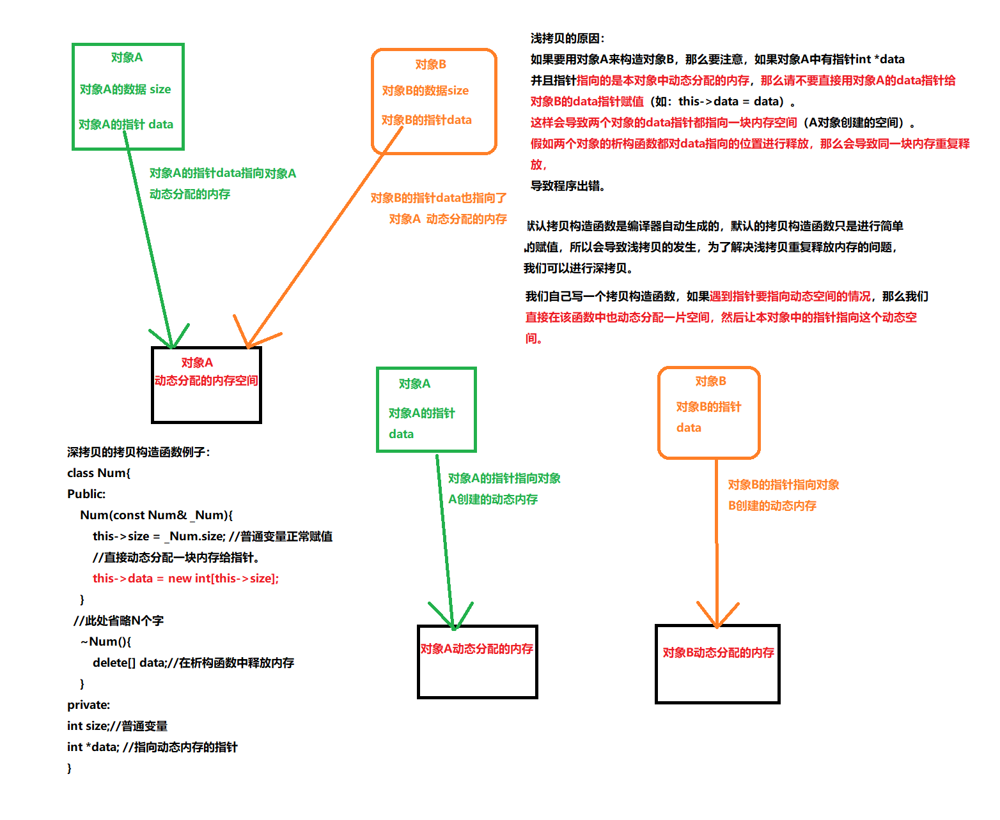

# 简介：
（在没有用户自己定义拷贝构造函数的情况下）编译器通过调用默认拷贝构造函数将一个对象的内容完 整地复制到另一个对象上。如果我们要拷贝的对象它的成员有指针，并且指针指向着某一块空间，那么就 要小心了。
通常我们创建一块动态空间，在不需要的时候会直接释放掉，如果编译器使用默认的拷贝构造函数复 制出一个新的对象，这个新的对象和原来的对象它两个之中的指针变量会指向相同的位置，如果我们在程 序的最后需要释放这块指针指向的内存空间时，会导致重复释放，因为新旧对象一块释放了这块空 间， 就会导致程序错误，以上为浅拷贝。
所以，我们要自己定义一个拷贝构造函数，并且在函数体中要使用动态内存分配，创建一块新的空间。 再将原先对象中的指针指向的内容拷贝到新分配的空间当中，这样在最后释放时，就是释放的两个不同的 空间了，这就不会导致重复释放，以上操作叫做深拷贝。
